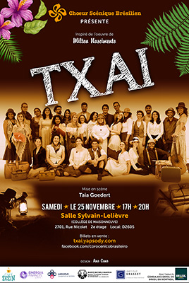

Affiches


Le Chœur Scénique Brésilien est un groupe qui célèbre la diversité de la culture et de la musique brésilienne au Canadá. Son objectif est de diffuser la musique brésilienne au travers la production de spectacles artistiques qui mettent en valeur d’importants aspects de la culture brésilienne encore peu connus à l’extérieur du Brésil. Ses performances, chaleureuses, dynamiques et de haut niveau, incluent des danses et des percussions. Sous la direction artistique de Taia Goedert et la direction musicale d’Auro Moura, le Chœur Scénique Brésilien a débuté ses activités en août 2015 et actuellement est composé de 36 chanteurs et 5 musiciens.